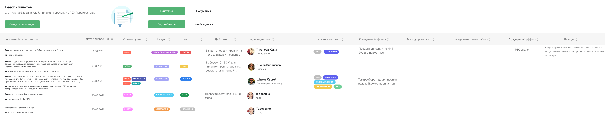

Как знание о сотнях пилотных проектов в магазинах «Перекрёстка» превратилось из экселевских табличек замов в цифровой продукт с бюджетом.
Торговая сеть «Перекрёсток» - один из ключевых активов X5. На момент 2020 года большинство запущенных пилотов и инноваций на уровне региональных директоров и директоров кластера не собирались в единой форме. Более того, никто не вёл единой таблицы запущенных изменений по конкретным магазинам: такое знание в оргструктуре компании было неявным, скрытым.
В рамках роли продуктового исследователя новой «Лаборатории продуктовых исследований» я провёл исследование и спроектировал цифровой продукт «Фабрика идей».

Отрисовка сложившихся бизнес-процессов и флоу по контролю запусков пилотов. Я провёл интервью с представителями бизнеса на уровне директора дивизиона и выявил ситуацию с контролем пилотов: большинство проектов ведут заместители в экселевских табличках, статус нигде не трекуется. Финансируются пилоты на низовом уровне из OPEX за счёт средств на капитальный ремонт.
Провёл воркшоп по списаниям в торговой сети, чтобы выявить наиболее актуальные запущенные пилоты. Сессия с 60 категорийными менеджерами, представителями службы безопасности и производства помогла определить примерное число актуальных пилотов и их статус.
В результате точечного исследования конкретных пилотов возникла особая форма карточки пилота: какие метрики мы будем исследовать и хранить в базе знаний (оперативные метрики, владелец пилота, связанные процессы). В качестве дополнительного способа оценки использовали I.C.E. - экспертную оценку для приоритизации гипотез.
Самостоятельно отрисовал рабочий прототип для переговоров с техническим доменом и X5 Tech: решение со стороны разработки касалось подключения подрядчиков и согласования бюджета из OPEX ритейлера (невозвратная инвестиция). Совместно с бизнес-аналитиком разработали простую ролевую модель.
Согласовал идею базы знаний с директором по концепту торговой сети и получил бюджет на разработку в размере двух миллионов рублей. Параллельно согласовал бюджеты на закупку облачной инфраструктуры и договорился о порядке работ с подрядчиком по доработкам.
Впервые в сети ритейлера начали оперативно контролировать статус выполнения пилотов на уровне директоров магазинов, регионов и дивизионов. Пилот вида «подвинем в магазине шкаф с кофе вперёд, чтобы увеличить продажи молотого кофе» связывается создателем с метриками «увеличения РТО» или «уменьшения списаний». Реализованный прототип позволяет масштабировать удачные пилоты и контролировать неудачные - с точки зрения их влияния на другие проекты магазина или региона.